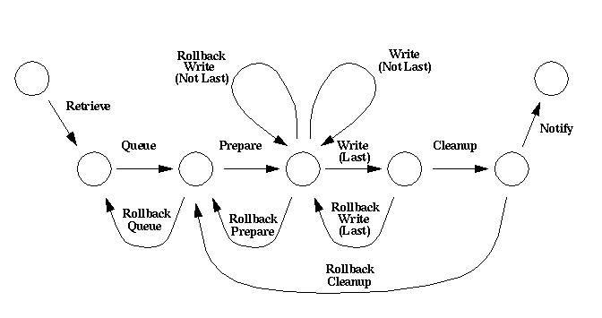

Storage Server Window
This server is responsible for the creation of archive
media and user transportable media.
The Storage Server window is displayed whenever the Storage Server
button (labeled "STO") is
selected on the main window
of the Console. See the
Subsystem Overview for
more details.
The components of the Storage Server window include:
- A menubar at the top, which
contains a number of menus. The menus and the menubar are
described in more detail below.
- Status information in the
middle, which details the running conditions of the Storage
Server.
- The Request Overview below the
Status Information. This section displays
the current media requests and their progress. It also contains
a number of buttons which allow the operator to initiate
operations which are performed on the media requests.
- At the very bottom of the window is the
short help display.
The short help message displays brief textual
descriptions of the Console's components.
Menubar
The menubar has five menus:
Commands,
Views,
Options,
Help, and
Quit,
which are described below.
Commands
This menu contains lists the sequence and general DHS control
commands that can be sent to
Storage Server.
The commands that can be
selected include:
Debug,
Simulation,
Reset Health,
Refresh,
Reset,
Initialize,
Ping, and
Test.
After the command has been chosen from the menu a dialogue window
will appear (described in detail in the
command descriptions). Most of the dialogue windows are
"modal", which means other windows can not be
manipulated while the dialogue window is active. Usually the
dialogue confirms the command choice.
If the command is "confirmed" then
the command is sent only to the Storage Server for
processing.
The commands shown on the "Commands" menu are
also available from the toolbar
shown in the status section of the
Storage Server window.
Views
This menu contains a list of three items which allow the Storage
Server's operations to be viewed
from several viewpoints.
The different viewpoints are:
Actions,
Units,
Stages, and
Devices,
Each viewpoint displays a separate window, described
in the various viewpoint on-line help information (follow the
"links" above).
The viewpoints shown on the "Views" menu are also available
from the views toolbar shown below the
media request information on the Storage
Server window.
Options Menu
Currently the only item is
"Health Description Length".
Choosing this item allows the
operator to change the number of health description messages shown
in the drop-down list.
Note that more items may be added to this menu in the future.
Help Menu
This menu contains two items: "About" and "Extended...".
If "About" is selected
a brief message describing DHS is
displayed in a pop-up window. If "Extended..." is
chosen
then this HTML page is displayed in a Netscape web
browser.
Quit Menu
This menu contains one item: "Close". When
"Close" is chosen
the Storage Server window is removed from the display, but
the Storage Server is not shut down. See the
Shutdown command for information
on shutting down DHS.
Storage Server Status
The middle section of the Storage Server window contains the
Storage Server's status information.
This includes the following status items:
state,
health,
debug level,
simulation level, and
health description.
The status items can be viewed only, they can not be changed from the
Console.
Toolbar
Below the status information is a toolbar, or row of
buttons. When these buttons are
invoked
a dialogue window is displayed, usually
confirming that the chosen command is the desired one.
If the command is "confirmed" then the command is
sent only to the Storage Server for processing.
The commands that can be selected are:
Debug,
Simulation,
Reset Health,
Refresh,
Reset,
Initialize,
Ping, and
Test.
These commands can also be issued from the
Commands Menu.
Request Overview
This section not only displays the current processing information for each
request but also provides facilities for controlling the processing of
media requests.
A media request passes through many steps before it is complete:
Retrieve,
Queue,
Prepare,
Write,
Cleanup, and
Notify.
The image below shows the order in which steps are processed as
well as which steps can be "rolled back" (undone).

This sequence of steps, and their order, has influenced the display of
the request information. The request display is a table, where the rows
are requests and the columns are the steps one must take to process a
media request.
The columns in the request rows are, from left to right:
- Name:
Each media request, row, has an associated name, which is
displayed on a button. When the button is
invoked,
detailed request information is displayed in the
request window .
- Retrieval information
Size:
The number of megabytes of data that can be retrieved is displayed
on a button. When invoked
the Action Information Window
is displayed.
Buttons:
A set of two buttons;
stop and forward. The actions taken when the buttons are
pressed are described below.
Also described below is
the processing state portrayed by the buttons
- Queue information
Size:
The number of media units, CDs, of data that can be queued.
When this button is
invoked
the Action Information Window
is displayed.
Buttons:
A set of three buttons;
reverse, stop and forward. The actions taken when the buttons are
pressed are described below.
Also described below is
the processing state portrayed by the buttons.
- Prepare information
Number:
Number of media units (CDs) that can be prepared.
When this button is invoked
the Action Information Window
is displayed.
Buttons:
A set of three buttons;
reverse, stop and forward. The actions taken when the buttons are
pressed are described below.
Also described below is
the processing state portrayed by the buttons.
- Write information
Number:
Number of media units that can be written.
When this button is
invoked
the Action Information Window
is displayed.
Write Buttons:
A set of three buttons;
reverse, stop and forward. The actions taken when the buttons are
pressed are described below.
Also described below is
the processing state portrayed by the buttons.
- Cleanup information
Number:
Number of media units that can be removed from the staging area.
When this button is
invoked
the Action Information Window
is displayed.
Buttons:
A set of two buttons;
stop and forward. The actions taken when the buttons are
pressed are described below.
Also described below is
the processing state portrayed by the buttons.
- Notification information
Value:
A boolean (true/false) value that indicates whether the Data Server
can be notified of the media requests completion.
When this button is
invoked
the Action Information Window
is displayed.
Buttons:
A set of two buttons;
stop and forward. The actions taken when the buttons are
pressed are described below.
Also described below is
the processing state portrayed by the buttons.
As described above there are either two or three buttons displayed
for each action. The actions that are taken only affect the step
they are associated with. The actions taken when a button is
pressed is as follows:
Step Button Actions
| Button |
Action |
| Reverse |
The "undo" button. It undoes the last
action that was processed
by sending a
stoRequestRollback
command to the Storage Server. Note that not all commands
can be reversed. |
| Stop |
Either cancels the action waiting to be processed
or stops the action currently being processed
by sending a stoCancelAction
command to the Storage Server. |
| Forward |
Initiates the processing of an action. It sends a
stoRequestAction
command to the Storage Server. |
As mentioned above the reverse, stop, and forward buttons are used
to indicate the state a particular step is in. Each stop of a
media request may be in one of four states:
IDLE, REQUESTED, IN-PROGRESS, or
ROLLBACK IN-PROGRESS
The background colour of the reverse, stop and forward buttons
indicates what state the step is in. Note that not all steps have
a reverse button, which means they will never be in the
"ROLLBACK IN-PROGRESS" state. The colour for each
state is as follows:
Step Button Colours
| State |
Reverse Button |
Stop Button |
Forward Button |
| IDLE |
gray |
gray |
gray |
|---|
| REQUESTED |
gray |
gray |
yellow |
|---|
| IN-PROGRESS |
gray |
gray |
green |
|---|
| ROLLBACK IN-PROGRESS |
green |
gray |
gray |
|---|
Views Toolbar
Just below the request information is second toolbar, the Views toolbar.
This toolbar contains three buttons, choices:
Actions,
Units,
Stages, and
Devices,
When these are selected
the contents of
the Storage Server's action queue, unit list, and staging areas are
displayed in a pop up windows, respectively. These various window allow
the Storage Server's operations to be viewed from different viewpoints.
Note that these views can also be displayed from the
Views menu.
Shannon Jaeger
Last modified: Fri Jun 18 11:48:22 PDT 1999